Dzvali - Kabu
I’ve tweaked the schedule. Grab the latest copy
Niloo’s lecture is online now.
Will’s office hours today end at 1pm
Ergative/Absolutive Systems
Caucasian Languages
Dravidian Languages
(Here’s a touch of review, just in case)
(Who did what to whom)
Fundamentally, we need to know:
In linguistics, we break those into three “roles”:
Subject (of an intransitive sentence)
Agent (of a transitive sentence)
Object (of a transitive sentence)
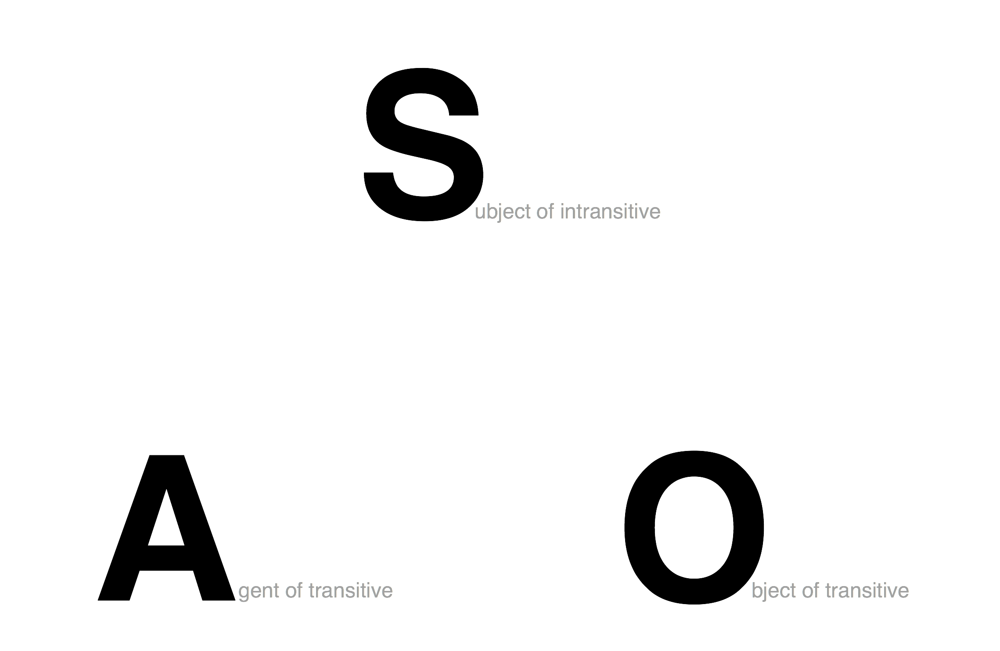
“Let’s mark Subject and Agent using the same morpheme!”
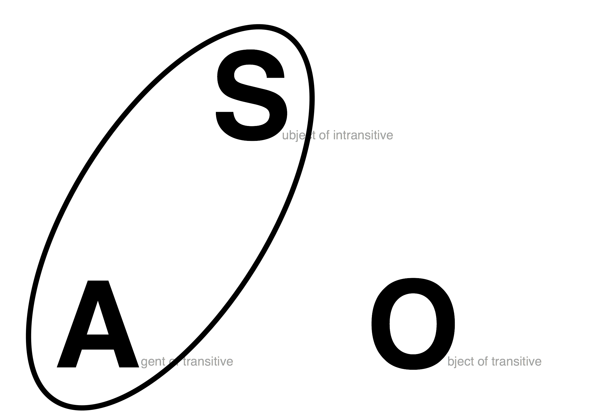
This is called a “Nominative/Accusative” system
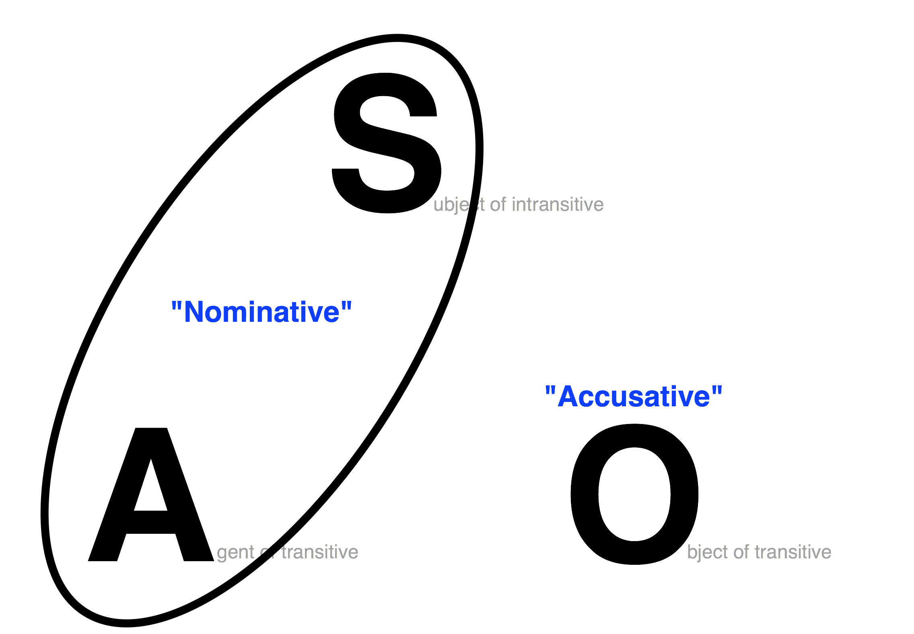
Group S and A together
The same case markers are used for S and A
Subjects and agents are nominative!
“I slept”, “I saw her”
“Me slept”, ”Me saw her”
“No, let’s mark Subject and object using the same morpheme!”
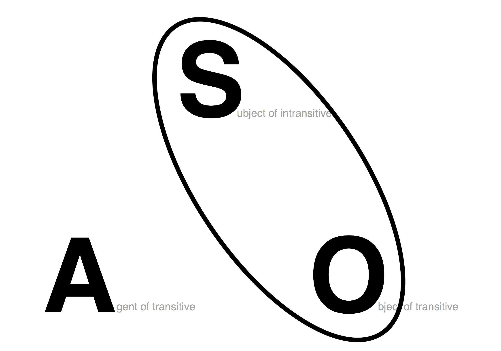
This is called a “Ergative/Absolutive” system
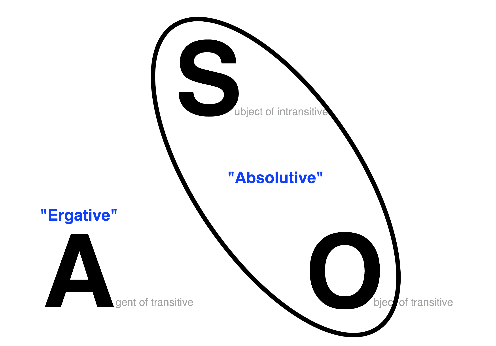
The case marker that marks S and O is called Absolutive Case
The case marker that marks A is called Ergative Case
(Think “Erg-” as “work”, as in “Ergonomics” or “Energy”)
Group S and O together
The same case markers are used for S and O
Subjects and objects are absolutive!
Erg/Abs is less common than Nom-Acc
Ergative/Absolutive is found in specific areas
You’ll never have a “Nominative” or “Accusative” case in a truly Erg/Abs system
You’ll never have an “Ergative” or “Absolutive” case in a truly Nom/Acc system
Jon etorri dira.
Jon-ABS come AUX
“Jon came.”
Nekanek Jon ikusi ditu.
Nekane-ERG Jon-ABS seen AUX
“Nekane saw Jon”
Jon etorri dira. - “Jon came.”
Nekane-k Jon ikusi ditu. - “Nekane saw Jon.”
S = Unmarked
O = Unmarked
A = -k
Absolutive Case = Unmarked
Ergative Case = -k
bitʃ‘-ma dzaghl-i bagh-ʃi damala.
boy-erg dog-abs garden-dat.in hid.aor
‘The boy hid the dog in the garden.’
dzaghl-i bagh-ʃi daimala.
dog-abs garden-dat.in hid.aor
‘The dog hid in the garden.’
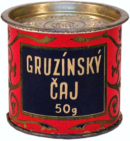
In an Ergative/Absolutive language, which case markers would be used for the sentences:
“Will needlessly dissed Michael Bay. Kevin laughed.”
Will = ERG, Michael Bay = ABS, Kevin = ABS
Will = ABS, Michael Bay = ERG, Kevin = ERG
Will = ERG, Michael Bay = ABS, Kevin = ERG
Will = ABS, Michael Bay = ERG, Kevin = ABS
In an Ergative/Absolutive language, which case markers would be used for the sentences:
“Michael Bay misrepresented Optimus Prime. Will cried.”
Michael Bay = ERG, Optimus = ABS, Will = ABS
Michael Bay = ABS, Optimus = ERG, Will = ERG
Michael Bay = ERG, Optimus = ABS, Will = ERG
Michael Bay = ABS, Optimus = ERG, Will = ABS
This is called “Split ergativity”
| Nepali - Ergative/Absolutive for animate subjects |
Nepali - Nominative/Accusative for inanimate subjects
Hindi/Urdu - Ergative/Absolutive in the past
Hindi/Urdu - Nominative/Accusative in the present
We don’t use consistent case names in these situations
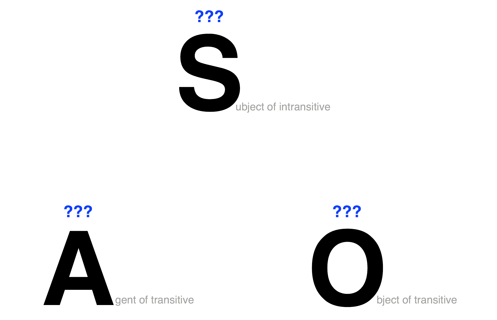
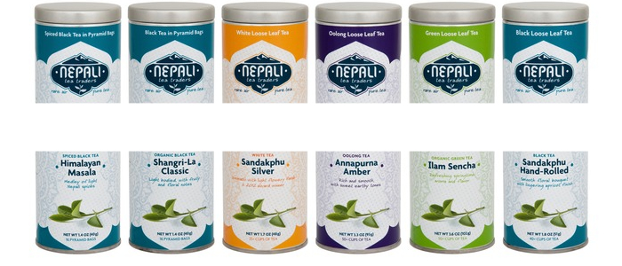
(Sorry)
Nominative/Accusative - Groups S and A
Ergative/Absolutive - Groups S and O
Split Ergative - No grouping, or variable grouping
Although we’ll keep touching on small variations from time to time…
Speaking of Ergative languages…

Northwest Caucasian - Kabardian, Abaza, Abkhaz
Northeast Caucasian - Chechen, Lezgic
Kartvelian (or “South Caucasian”) - Georgian, Svan, Zan
We can’t yet trace any higher-level families for these languages
An area where languages which are not known to be related all share some features.
Ergativity!
Agglutinative morphology
Ejectives and lots of consonants!
Relatively few vowels 😢
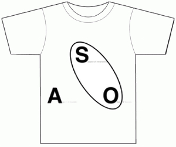
When a language sticks lots of morphemes together to make very complex words, without changing the morphemes
Think “glue”, you’re just sticking moprhemes together!
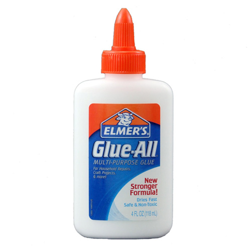

Thanks Dr. C. George Boeree!
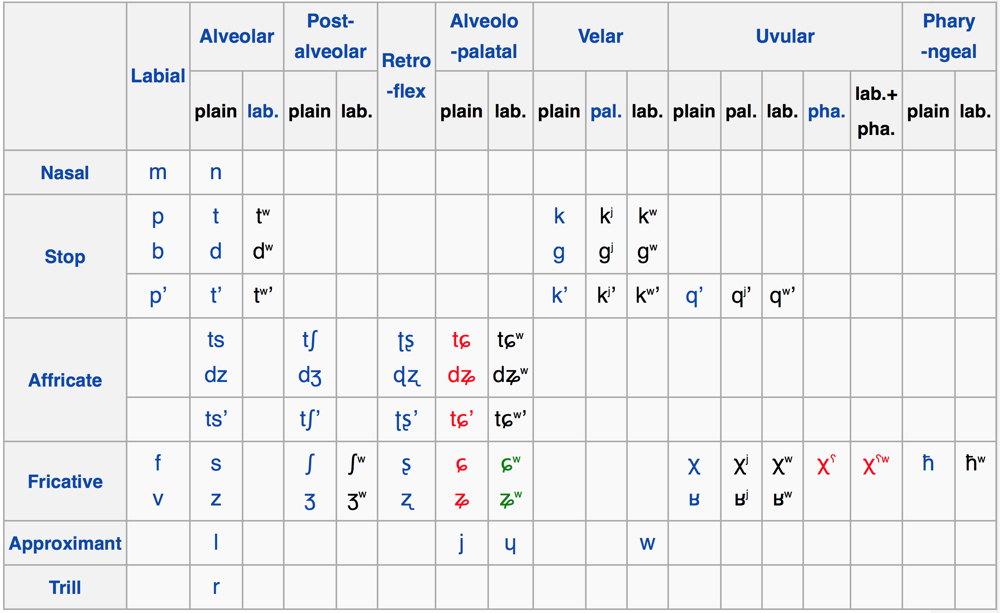
| High | ɨ |
|---|---|
| Low | ə |
This is a recurring pattern: Lots of consonants, few vowels, and vice versa
This gets into information and coding theory, which gets awesome, quickly
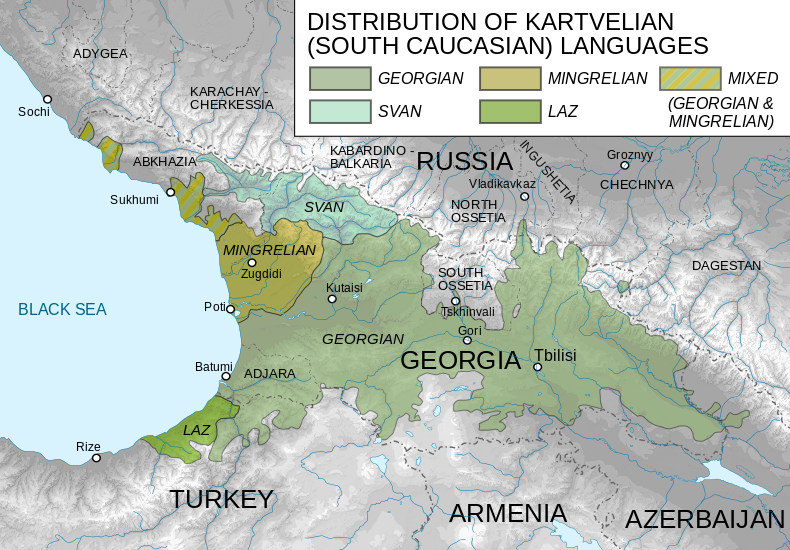
Georgian (around 4.5m speakers)
Mingrelian (around 500k speakers)
Laz (around 200k speakers)
Svan (around 40k speakers)
Vowel heavy for a caucasian language
Official language of Georgia
Really awesome writing system
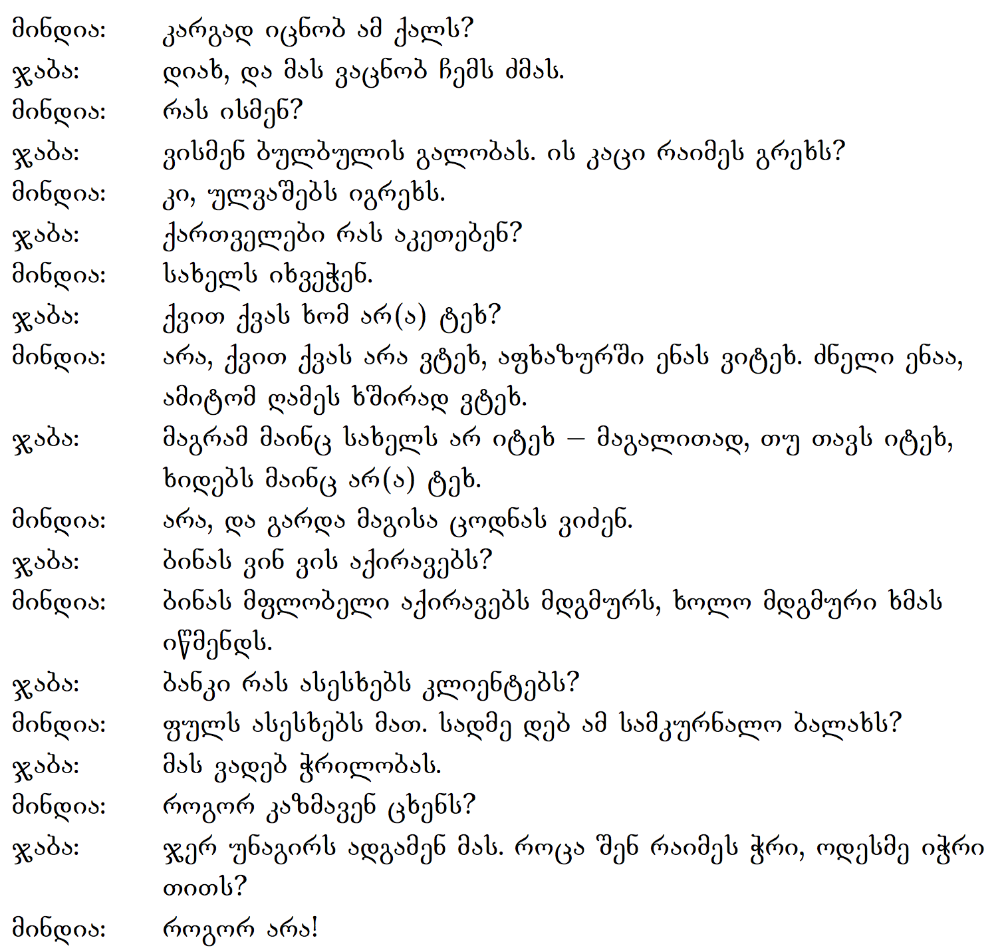
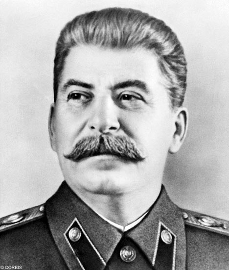
Born as “იოსებ ბესარიონის ძე ჯუღაშვილი” in Gori, Georgia
Changed his name to “Iosif Vissarionovich Stalin”
Stalin = Russian word for “Steel” + “-in”, made of.
Lenin = Russian word for “Iron” + “-in”, made of.
Never quite mastered the Russian language
Killed between 34-49 million people with his policies
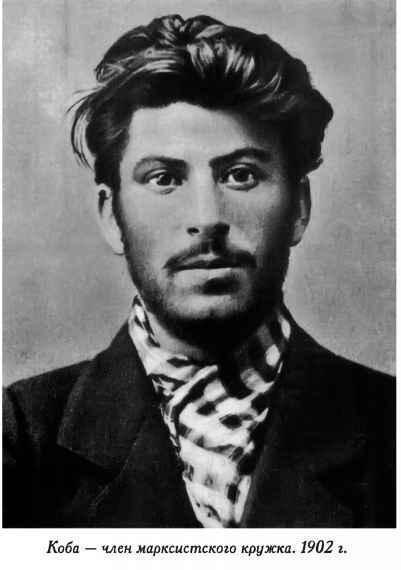
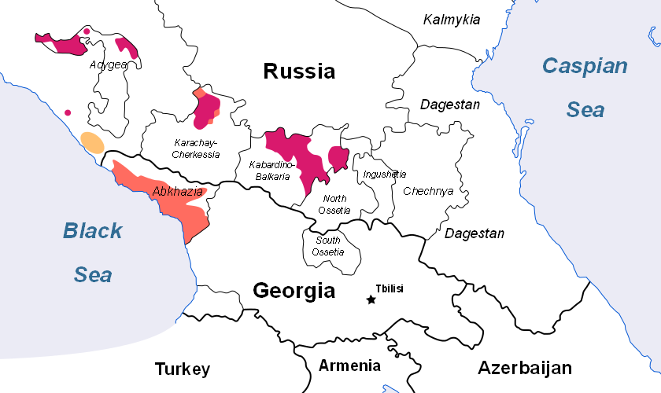
(Red = Adyghe/Kabardian, Orange = Abhaz/Abaza)
Adyghe (around 500k speakers)
Kabardian (around 1.6m speakers)
Abkhaz (around 100k speakers)
Abaza (around 50k speakers)
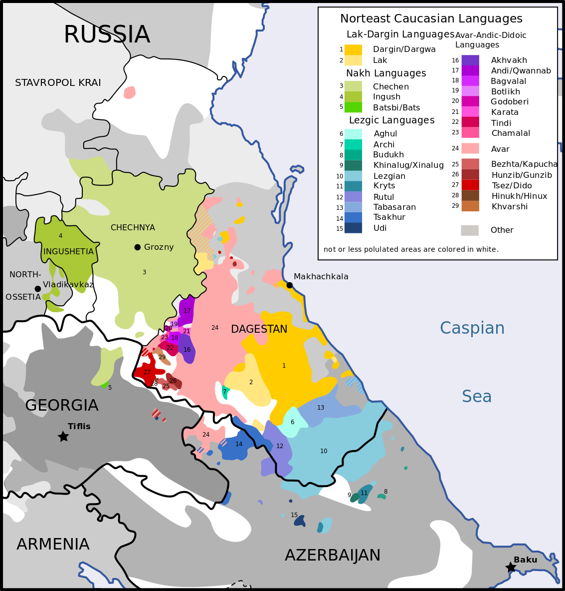
Chechen (around 1.3m speakers)
Avar (around 700k speakers)
Lezgi (around 500k speakers)

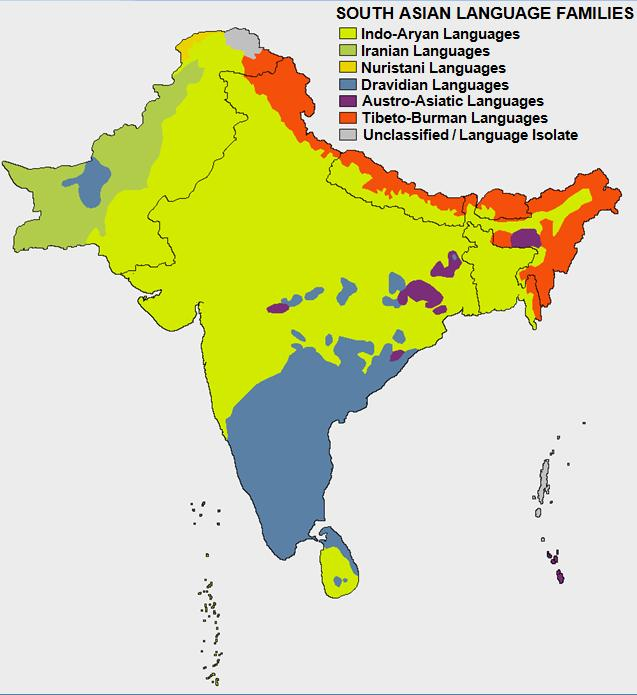
A top-level language family
Proto-Dravidian has been proposed as the language of the Indus River Civilization
Spoken by ~21% of India’s population
Telugu - 85m speakers
Tamil - 70m speakers
Kannada - 49m speakers
Malayalam - 38m speakers
Agglutinative Morphology
SOV
Grammatical Gender!
Past/Non-Past tense system
Lots of small sound distinctions!
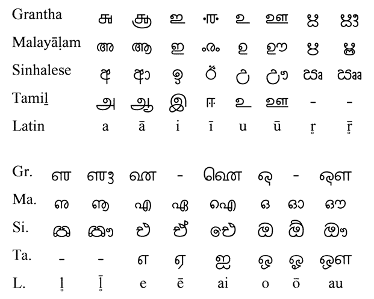
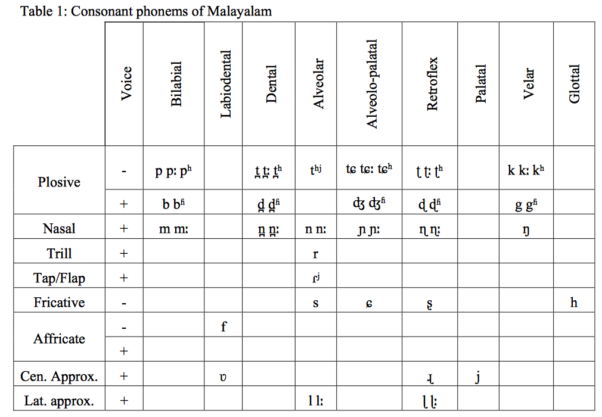
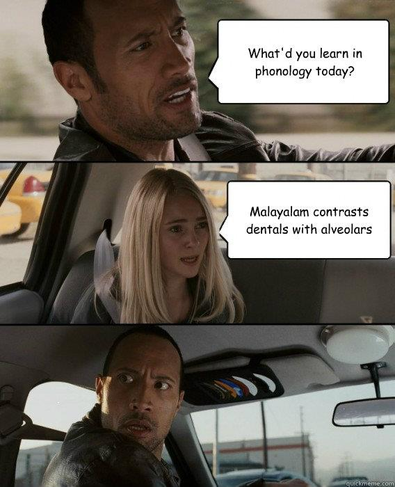
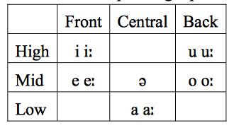
Ergative languages group S and O
Caucasian languages are awesome
Dravidian languages are awesome
http://savethevowels.org/world/slides/lotw_8.html